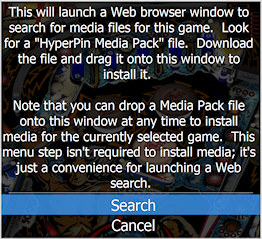

One of the functions in the Game Setup menu is "Find game media online", which brings up a Web browser with a Google search term that looks for a HyperPin Media Pack for the current game. This is designed to make it quick and easy to find the basic media items (wheel image, promotional flyer, instruction cards) for a game.
I heard from a user who wanted to augment this function with a local search. He explained that he has a large collection of these media pack on his hard disk, so it's often more convenient for him to do a "local" search for something he's already downloaded than to look on the Web. I can understand why this would be useful for him, but it seemed like a difficult idea to generalize into a built-in feature, because everyone has their own way of arranging their disk files. That made it look like a good candidate for a Javascript feature, since that approach would make it easy to customize for different setups.
In this example, we'll supplement the "Find media online" menu with a new command that opens the local Downloads folder. We'll keep the online search command as well, so adding this extension lets you choose each time where to look. You could further customize the example to look in a different folder (other than Downloads), or to add extra commands to open other local folders.
The menu we're going to customize is the one that comes up when you select "Find game media online" from the Game Setup menu. Here's what the normal, built-in version of that menu looks like:
That menu obviously doesn't do much; it's really only there to remind you that you'll have to take some manual action after switching to the Web browser to view the search results, since PinballY won't have a way to interact with you once the browser is in the foreground. Even though the menu doesn't do much right now, though, it does provide a natural place to add our new search option.
Our main task in this example will be to add a new command, "Open Downloads Folder", after the existing "Search" command. This really takes two tasks: the first is to modify the menu, and the second is to actually implement the new command. In addition, we'll make a couple of small cosmetic changes to the menu to adapt the text to reflect that there are more options present.
Before we start modifying the menu, there's a small detail that always goes with creating new commands. Each menu item needs a "command ID", which PinballY uses to connect the menu item to the code that carries out the command. The ID is just an arbitrary integer value. PinballY assigns its own IDs to all of the built-in commands (you can find a full list in Commands), but since we're adding a new command that didn't exist before, we're responsible for assigning it a new ID. We only have to do this step once, at the start of the program session, so we put this code at the "top level" of the file, outside of any functions. We'll save the new ID in a global variable so that we can reference it later.
The way to modify a system menu is to listen for the menuopen event. That gets fired each time a menu is open. The event contains an ID telling us which menu is being opened, so our listener starts by checking the ID to see if this is the menu we want to change. From the list of system menus, we can see that the ID for the menu of interest in this case is "media search".
Our main task here is to insert our new "Open Downloads Folder" command after the existing "Search" command. So we have to find the "Search" command. The event contains an items property containing the list of menu items that the system proposes to display, so we just have to search that list for that item. The best way to identify the item is via its command ID. We could check the title string instead, but that's not a good idea, because the title could be tweaked in a future version, or it could be translated into another language for a localized version. The command ID is more universal.
Once we find the existing "Search" item, we can use Javascript's array "splice" method to insert our new item just after it.
Notice that we referred to the global variable that we used to save the new command ID we assigned earlier.
There's actually a slightly easier way to add a menu item, thanks to a method in the event object itself called addMenuItem(). This method does exactly the same thing we just did to the items array manually, but without having to write quite so much code on our part. We could use it to replace the lines above with a somewhat simpler and clearer version:
As long as we're messing with the menu, let's make a couple of small cosmetic changes to the existing text. That big explanatory paragraph at the top isn't quite right now that there's another option besides searching the Web, so let's touch it up to reflect the new reality. Note that explanatory text like this is always in the first "items" slot, so we don't need to bother with a search this time.
Let's also change the title of the existing "Search" item to make it clear that this is the Web search option, now that we also have an option to search locally. We'll squeeze this line into the bracketed section in the "if" above.
There's one final step before we return, which is to tell PinballY that we modified the menu. For the sake of efficiency, the system doesn't bother checking for changes to the item array unless you set this flag in the event object.
Putting it all together, here's our full listener:
Note that it might have been a little easier in this case to just replace the whole menu outright, by supplying a whole new array for "items". That would eliminate the need to search for the "Search" item. But I think it's always better to use the modification approach we chose here, because that adapts more readily to any future changes to the system menu. For example, if a future version of PinballY adds its own new commands to this menu, you'll see them show up on your modified menu automatically, because the listener always starts with whatever the system is going to use by default and then adds to it. That wouldn't happen if we replaced the menu entirely.
For full details on modifying and replacing system menus, see Overriding a system menu.
Okay, the menu is all set - the next time you open it, you'll see the new command. But selecting that command won't actually do anything yet, because we still have to write the code to carry it out.
The place to handle a menu command is in a command event listener. The system fires that event each time the user selects a command from a menu (or by any other means, such as pressing a key assigned to the command). The event contains an ID telling us which command is being executed. We can test that against the global variable we used to store the command ID we assigned for our custom command.
Opening the current user's Downloads involves a bit of arcane Windows API work. But that's not an obstacle! PinballY gives you access to nearly any Windows API via the dllImport system. The upside is that you can carry out almost any Windows function that you could write in C++ or C# or any other language; the downside is that you have to know your way around the complexities of the Windows API.
This isn't a tutorial for Windows API programming, so we won't go into the details of how all of these API calls work. But we did promise a complete example, so let's lay out the full code required.
The first piece is to "bind" all of the Windows API calls we need to make. Like the global variable assignment we did earlier for our new command ID, this is one-time-only work that we do at the top level of the file, outside of any functions.
I know that looks like gibberish if you're not familiar with the Windows API, but if it's any consolation, this is all just copied and pasted from the standard Windows API headers. If there's an API call you want to make, you can usually just find the definition in the headers and copy it; you don't have to make these things up yourself. The dllImport mechanism uses the same C++ syntax that the Windows headers use, specifically so that you can mostly copy the function definitions from the Windows headers verbatim.
With those system API bindings in place, we can now write the full command handler. The basic strategy here is that we have to ask Windows for the file system path to the Downloads folder, then ask the desktop shell (Windows Explorer) to open that folder for us. Here's the full command event listener: